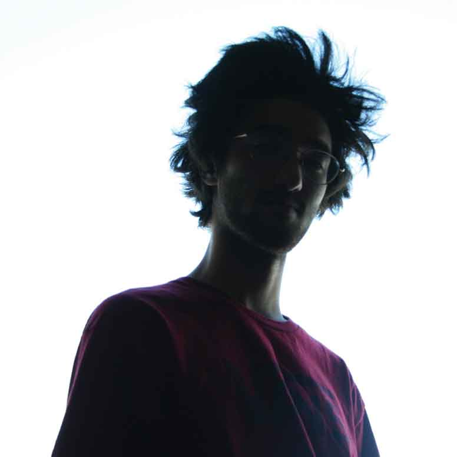

SHOGO SHIMIZU


ABOUT ME
My name is Shogo, and I am a Graphic Designer based in Ottawa, ON.
I recently started working for a skateboard company called Moodra Skateboards.
I am also actively involved in the Ottawa skateboard community, and volunteer for various fundraisers with For Pivots Sake , which is a non-profit organization founded by Antique Skate Shop to engage and mentor less fortunate youth in the Ottawa community.